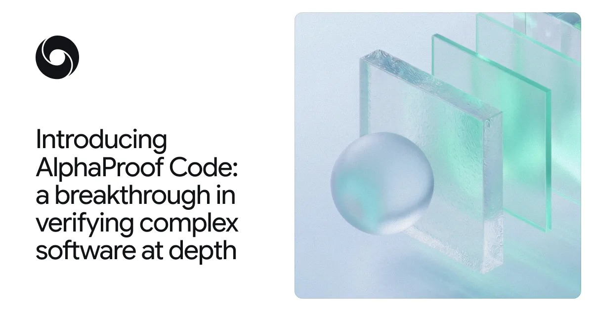
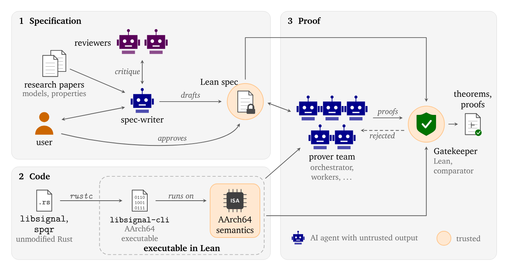
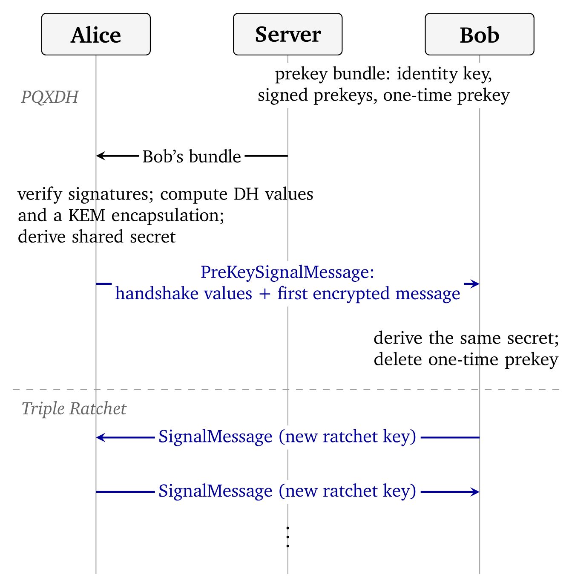
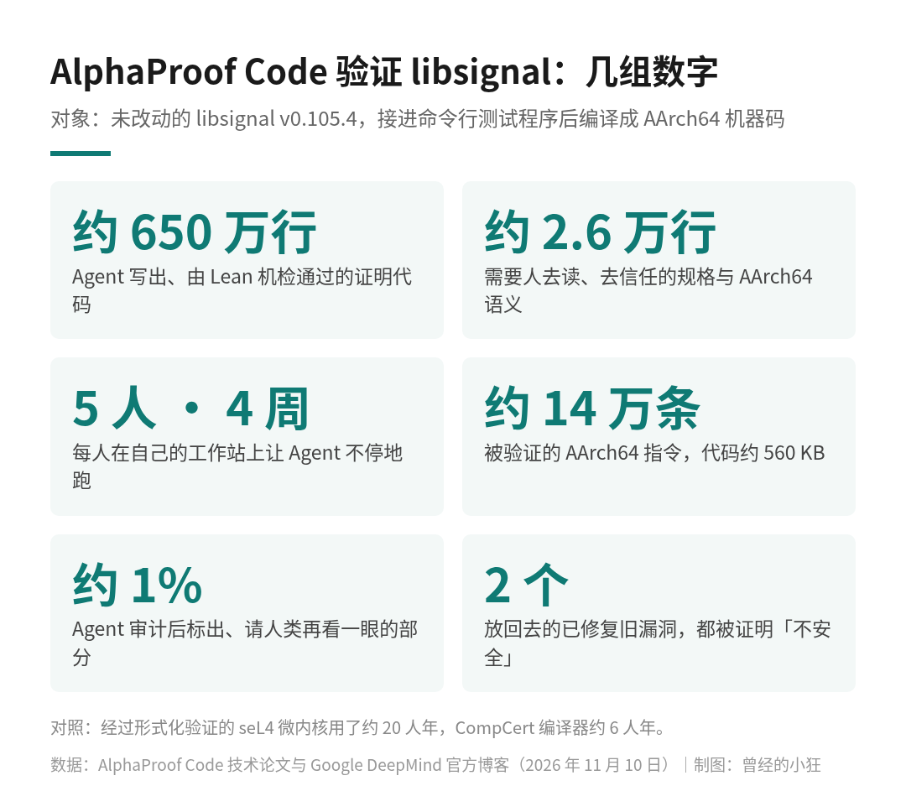

你每天在 Signal、Google Messages 里发出去的私密消息，背后靠的是同一套加密协议：Signal 协议。DeepMind 在博客里说，它保护着数十亿次私密对话。
11 月 10 日，Google DeepMind 发布了一个叫 AlphaProof Code 的框架，并拿它干了一件安全圈惦记了很多年的事：用数学方法证明，Signal 协议的核心实现 libsignal，在编译成机器码之后，确实具备几条关键的安全性质。
整件事用了四个星期。干活的主力，是一群 AI Agent。

AlphaProof Code 发布题图。图片来源：Google DeepMind 官方博客
平时说一段代码安全，大多是「测过了、审过了、暂时没找到问题」。测试再多，也只能覆盖你想到的那些情况。
形式化验证走的是另一条路：先把「安全」写成精确的数学命题，再证明代码在所有可能的输入和攻击下都满足它。一旦证出来，凡是违反这些命题的漏洞和攻击，都被排除了。
难处在于太贵。论文里举了两个领域内最有名的例子：经过形式化验证的 seL4 微内核用了大约 20 人年，CompCert 编译器用了大约 6 人年。而且这些系统的代码当初就是为了方便验证而写的。要去证明一份已经在生产环境跑着、又经过优化编译器处理的现成代码，难度更上一层，因为你不能为了好证而去改它。
DeepMind 说，这是第一次用 AI 在这个深度上对一个被广泛部署的加密协议做形式化验证；也是这类协议的实现第一次被形式化验证，不论用不用 AI。
AlphaProof Code 的分工很像一个研究组。
第一步写规格。研究人员和多种模型一起，把 Signal 的安全目标翻译成形式化的数学规格，用的是 Lean，一种可以由计算机检查数学证明的语言。每一条规格都经过人类专家审阅。
第二步写证明。由 Gemini Carbon 驱动的一群证明 Agent 自主干活，最后产出约 650 万行 Lean 证明代码（博客的说法是逾 600 万行）。证明能不能算数，不看 Agent 怎么说，只看 Lean 的内核检查能不能通过。

AlphaProof Code 的工作流程：规格编写、代码与 AArch64 语义、证明三部分。图片来源：AlphaProof Code 技术论文图 1
有一个设计我特别喜欢：证明 Agent 不能改规格。它们要是发现规格写得不对，只能向一个「评审 Agent」提修改建议，而这个评审 Agent 从来看不到证明过程。这样就堵住了最危险的一条捷径：证不出来，就偷偷把题目改简单。
第三步是审计。Agent 回头审一遍证明，把需要人类再看一眼的地方标出来，博客说只占整个代码库的约 1%。其余部分 Lean 会自动检查，专家可以把精力集中在最需要人类判断的地方。
论文里有一句话，我觉得是整件事最值得记住的：当证明变得便宜，真正难的问题就变成了「该证明什么」。团队的大部分精力，花在写规格上，而不是写证明上。
这次证明的对象，是未经改动的 libsignal v0.105.4（连同后量子相关的 SPQR 组件）。团队把它接进一个小小的命令行测试程序，用标准的 rustc 编译器编译成 AArch64 Linux 机器码，然后直接对机器码做证明。
这一点很关键。多数协议验证停在设计层面，而真实世界的漏洞，经常就藏在设计和实现之间的缝里。直接证机器码，意味着不需要信任 Rust 源码，也不需要信任编译器；需要信任的是 Lean 的内核、团队写的 AArch64 语义，以及规格本身。
证明覆盖的是 Signal 的后量子握手 PQXDH 和 Triple Ratchet（三重棘轮），确立的性质包括：前向保密，也就是今天的密钥泄露了，过去的消息也解不开；攻破后安全，也就是设备一时被攻破，之后的消息还能恢复保护；还有身份认证和握手保密。在符号模型下，握手保密甚至考虑到了未来的量子攻击者。

Signal 协议示意：PQXDH 握手与之后的 Triple Ratchet 消息往来。图片来源：AlphaProof Code 技术论文图 2
规模上，被验证的 libsignal 代码约 560 KB，大约 14 万条 AArch64 指令。约 650 万行证明里，530 万行是关于这份二进制本身的。而读者真正需要去读、去信任的内容，大约是 1.8 万行规格加 8 千行 AArch64 语义，合起来约 2.6 万行。

AlphaProof Code 验证 libsignal 的几组数字。数据来自 AlphaProof Code 技术论文与 Google DeepMind 官方博客，制图：曾经的小狂
人手方面，论文写得很实在：证明工作由五个人在四周内完成，每个人在自己的工作站上让 Agent 不停地跑，一边指导规格，一边在系统的不同部分发起证明任务。
证明「代码是安全的」，听起来很好，可怎么知道规格本身没写成一个谁都能通过的空架子？
团队做了一个很聪明的检验：找来两个此前由其他研究者在 libsignal 里发现、后来已经修复的真实漏洞，把修复提交反向打回去，重新编译出带漏洞的版本，再看系统怎么说。
一个漏洞和「弱状态」有关：一条在新会话上解密失败的预密钥消息，会被拿去旧会话上试着解，一旦成功，新会话里保存着已签名预密钥秘密副本的未确认状态就会被存下来。另一个和「小子群」有关：握手的响应方没有检查发起方的 X25519 基础密钥是否合规，攻击者改一下这把密钥再重放握手，就能造出共享同一个秘密的第二个会话。
两个漏洞，系统都给出了完整的 Lean 证明：带漏洞的版本不满足安全定理。也就是说，规格是有牙齿的，真会咬住错误的代码。这两份「不安全」的证明落在符号模型上；论文也说明，在计算模型下反驳安全定理要难得多，因为那相当于要证明底层的困难性假设，本身就是数学上的未解问题。
据 WIRED 报道，这次分析在所看的协议部分里没有发现新的漏洞。
这类成果最容易被传成「AI 证明 Signal 绝对安全」，所以边界必须说清楚。
第一，证明的对象是接进测试程序的 libsignal，也就是 Signal 协议的核心实现，不是整个 Signal 应用。WIRED 也特意写了，这次没有对整个 Signal 手机应用做形式化验证。
第二，结论建立在明确的假设上。符号模型假设底层密码原语是理想的，比如哈希不会碰撞、没有密钥就解不开密文；计算模型则依赖 Gap-DH 等标准困难性假设。底层的密码原语和少量库函数是按「契约」描述的，不在这次逐条验证的范围里。
第三，论文列出了没覆盖的情况：符号模型这边不含计算意义上的保密、两方以上的场景，以及 SPQR 的后量子自愈；计算模型这边不含量子攻击者、多设备状态等，而且在多个长会话、轮换很多次的大规模情况下，安全界会失去意义。
第四，起点并非从零开始。规格编写 Agent 是在已有的 Signal 符号和计算规格基础上改写、扩展的；WIRED 也提到，Signal 基金会此前做过的形式化工作给了他们一定的先手。成本方面，据 WIRED 报道，Google 没有透露这次分析花了多少钱。
Signal 首席技术官 Ehren Kret 在 DeepMind 博客里说：
「以往的形式化验证集中在代码中较小的部分，而 Google DeepMind 的方法让范围大幅扩展。用 AI Agent 把正在运行的代码翻译成有效的 Lean 定理，是一项重大突破。随着 AI 驱动的安全威胁增多，对 Signal 协议实现的严格验证，让我们对代码的隐私保证更有信心。」
这几年大家聊 Agent，常常停在「帮我写段代码」「帮我订张票」。AlphaProof Code 把 Agent 的能力讲得具体多了。
它们能连续几周不停地干长程任务，产出几百万行别人可以机器检查的结果；它们被安排进一个有制衡的结构里，证明的不能改题，改题的看不到证明；它们还能回头审计自己的工作，把需要人看的那 1% 挑出来。人类做的，是决定证什么、拍板最后的取舍。
论文的建议也很清醒：在大型复杂系统上，AI 可以大幅降低写规格和做验证的成本，但不能完全取代人的判断和审阅。
DeepMind 说会把这次的形式化验证成果开源，Lean 代码已经放在项目页上。他们认为，这为保护医疗设备固件、电网软件这类关键系统打下了基础，同时也承认，要把这套方法规模化还需要继续研究。至于能不能以可接受的成本推广，还要再看。
但至少这一次，过去要专家团队干上好几年的验证，被压缩成了五个人、四个星期。
来源清单：
Google DeepMind 官方博客：https://deepmind.google/blog/introducing-alphaproof-code/
AlphaProof Code 项目页与技术论文：https://google-deepmind.github.io/code-verification/
WIRED 报道（辅助）：https://www.wired.com/story/a-new-ai-tool-from-google-deepmind-formally-verified-the-signal-protocol/